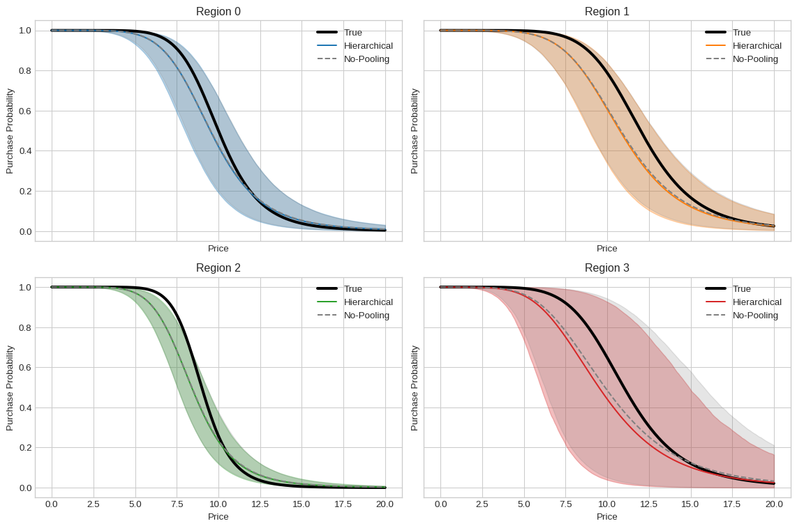

Hierarchical Bayesian Modeling of Willingness to Pay
machine learning
bayesian inference
Author
Felipe Angelim
Published
May 29, 2025
Motivation
In real-world scenarios such as pricing experiments, different groups or regions often exhibit unique behaviors. For example, customers from different regions and age groups may be willing to pay different prices for a given product. However, datasets can be imbalanced, and some segments may have significantly fewer observations than others. This imbalance can lead to unreliable estimates of group-specific behaviors if we model each region independently. Bayesian hierarchical models offer an elegant solution by effectively “borrowing strength” across groups, resulting in better-informed inferences even for underrepresented groups.
In this post, we will infer the Willingness-to-pay (WTP) curve of customers:
How much does someone have to pay or be compensated for a change in their environment so as to be no better off or worse off after the change as before? (Paczkowski (2018))
We will:
Simulate an imbalanced dataset representing customer purchase decisions across four groups (regions).
Define and fit a no-pooling Bayesian model where each region is modeled independently, and visualize its results.
Define and fit a Bayesian hierarchical model to capture region-specific purchase behaviors, leveraging shared hyperpriors, and visualize its results.
Compare the predictions from both models side-by-side.
1. Simulating Imbalanced region Data
Import libraries and define utility functions
import jaximport jax.numpy as jnpimport numpy as npimport numpyroimport numpyro.distributions as distfrom numpyro.infer import MCMC, NUTS, Predictiveimport matplotlib.pyplot as pltimport pandas as pdimport warningswarnings.filterwarnings("ignore")numpyro.enable_x64()plt.style.use("seaborn-v0_8-whitegrid")# Utility Function 1: Compute Predictive Curvesdef compute_predictive_curves(p50_posterior, slope_posterior, price_grid):""" Computes posterior predictive samples for purchase probability curves. Args: p50_posterior (np.ndarray): Posterior samples for p50 (shape: n_samples, n_regions). slope_posterior (np.ndarray): Posterior samples for slope (shape: n_samples, n_regions). price_grid (np.ndarray): Grid of prices for evaluation (shape: n_prices,). Returns: np.ndarray: Posterior samples of purchase probabilities (shape: n_samples, n_regions, n_prices). """ n_samples = p50_posterior.shape[0] n_regions = p50_posterior.shape[1] n_prices = price_grid.shape[0] prob_posterior_samples = np.empty((n_samples, n_regions, n_prices))for i inrange(n_samples):# Broadcasting: p50_posterior[i] is (n_regions,), slope_posterior[i] is (n_regions,)# price_grid is (n_prices,). ratio becomes (n_regions, n_prices) ratio = price_grid[None, :] / p50_posterior[i][:, None] prob_posterior_samples[i] =1/ (1+ ratio ** slope_posterior[i][:, None])return prob_posterior_samples# Utility Function 2: Summarize Posterior Probabilitiesdef summarize_posterior_probs(prob_posterior_samples, q_low=0.025, q_high=0.975):""" Calculates mean and credible intervals for posterior probability samples. Args: prob_posterior_samples (np.ndarray): Posterior samples of probabilities. q_low (float): Lower quantile for credible interval. q_high (float): Upper quantile for credible interval. Returns: tuple: mean_probs, low_ci_probs, high_ci_probs """ mean_probs = prob_posterior_samples.mean(axis=0) low_ci_probs = np.quantile(prob_posterior_samples, q_low, axis=0) high_ci_probs = np.quantile(prob_posterior_samples, q_high, axis=0)return mean_probs, low_ci_probs, high_ci_probs# Utility Function 3: Plot curves for all regions on a single Axesdef plot_all_regions_summary( price_grid, mean_probs, low_ci_probs, high_ci_probs, true_curves, n_regions, model_name, colors_list,):""" Plots estimated vs. true curves for all regions for a given model. """ plt.figure(figsize=(10, 6))for r_idx inrange(n_regions): plt.plot( price_grid, mean_probs[r_idx], color=colors_list[r_idx], label=f"Region {r_idx} ({model_name} Est.)", ) plt.fill_between( price_grid, low_ci_probs[r_idx], high_ci_probs[r_idx], color=colors_list[r_idx], alpha=0.3, )if true_curves isnotNone: plt.plot( price_grid, true_curves[r_idx], linestyle="--", linewidth=2, color=colors_list[ r_idx ], # Using same color for true curve for visual grouping label=f"Region {r_idx} (True)", ) plt.xlabel("Price") plt.ylabel("Purchase Probability") plt.title(f"{model_name} Model: Estimated vs. True Purchase Probability by Region\nwith 95% Credible Intervals" ) plt.legend( loc="center right", bbox_to_anchor=(1.45, 0.5) ) # Adjusted for more space plt.tight_layout() plt.show()
We simulate a dataset of 400 purchase decision samples distributed unevenly across four regions. This data could be coming from a survey conducted with current clients, to analyze how much they would pay to change their subscription or product to new option. Specifically, region 3 has significantly fewer observations, representing realistic data imbalance.
Generate imbalanced region data
# ---------- Simulated data (with imbalanced regions) ----------key = jax.random.PRNGKey(0)# split the key so we get fresh randomness for price, region, and labelskey, key_price, key_region, key_y = jax.random.split(key, 4)n_regions, n_obs =4, 200true_p50 = jnp.array([10.0, 12.0, 9.0, 11.0])true_n = jnp.array([2.0, 1.8, 2.5, 1.6]) *4# 1) sample prices as beforeprice = jax.random.uniform(key_price, (n_obs,), minval=0.0, maxval=20.0)# 2) define region probabilities (last region only 5%)region_probs = jnp.array([0.2, 0.2, 0.57, 0.03])region_idx = jax.random.choice( key_region, jnp.arange(n_regions), shape=(n_obs,), p=region_probs)# 3) generate “true” purchase probabilities and observationsp_true =1/ (1+ (price / true_p50[region_idx]) ** true_n[region_idx])y = dist.Bernoulli(probs=p_true).sample(key_y)
pd.DataFrame( data={"y" : y, "region_idx" : region_idx})
y
region_idx
0
1
1
1
0
0
2
0
2
3
0
2
4
0
2
...
...
...
195
1
2
196
0
2
197
0
2
198
1
2
199
1
2
200 rows × 2 columns
Prepare common variables for plotting
# Define price_grid, true_curves and colors early as they are needed for multiple plotsprice_grid = np.linspace(0, 20, 200)true_curves = np.vstack( [1/ (1+ (price_grid / tp50) ** tn) for tp50, tn inzip(true_p50, true_n)])cmap = plt.get_cmap("tab10")plot_colors = [cmap(i) for i inrange(n_regions)]
2. Model Without Pooling (No-Pooling Approach)
We begin by fitting a no-pooling model. We consider a logistic-like curve for the purchave probability:
p50_i is the price at which the purchase probability is 50% for region i.
slope_i controls the steepness of the curve for region i.
This approach treats each region entirely independently, meaning each region will have its own separate prior on p50 and slope, without sharing information across groups. This will serve as a baseline to understand the behavior of each region when modeled in isolation.
We now visualize the estimated purchase probability curves from the no-pooling model for each region, along with their 95% credible intervals and the true underlying curves.
Our hierarchical Bayesian model allows each region to have its own logistic-like purchase probability curve. Each region-specific curve is defined by two parameters:
p50: Price at which the purchase probability is 50%.
slope: Controls the steepness of the curve.
These parameters vary across regions and are drawn from hyperpriors, capturing similarities and differences across groups. This approach contrasts with the no-pooling model by allowing regions to “borrow strength” from each other, which can be particularly useful for imbalanced data.
def model(price, region, n_regions=4, y=None): N =len(price)# Hyperpriors for variability among regions sigma_slope = numpyro.sample("sigma_slope", dist.HalfNormal(1000.0)) sigma_p50 = numpyro.sample("sigma_p50", dist.HalfNormal(20.0))with numpyro.plate("regions", n_regions): slope_i = numpyro.sample("mu_i", dist.HalfNormal(sigma_slope)) # mu_i in example, corresponds to a mean for slope component p50_i = numpyro.sample("p50_i", dist.HalfNormal(sigma_p50)) # p50_i in example# Deterministic transformation for slopes (e.g. log1p for positivity if HalfNormal gives small values near zero effectively)# The original had jnp.log1p(slope_i) for 'slopes'.# If 'mu_i' from HalfNormal(sigma_slope) is directly the slope, then no transform needed or HalfNormal for slope itself.# The original model 'slopes = numpyro.deterministic("slopes", jnp.log1p(slope_i))' with 'slope_i' sampled as 'mu_i'.# This implies 'mu_i' is not the final slope but a parameter for it. Let's stick to original. slopes = numpyro.deterministic("slopes", jnp.log1p(slope_i)) p50s = numpyro.deterministic("p50s", p50_i) # p50_i is directly used as p50s p =1/ (1+ (price / p50s[region]) ** slopes[region]) numpyro.deterministic("p", p)with numpyro.plate("observations", N): numpyro.sample("obs", dist.Bernoulli(probs=p), obs=y)
Now we compare the predictions from both models—no-pooling and hierarchical—side-by-side for each region. This allows us to directly observe the effect of hierarchical pooling, especially for regions with sparse data.
Plot side-by-side comparison of models per region
# mean_h, low_h, high_h are from hierarchical model processing# mean_np, low_np, high_np are from no-pooling model processing# true_curves, price_grid, plot_colors are already definedfig, axes = plt.subplots(2, 2, figsize=(12, 8), sharex=True, sharey=True)axes = axes.flatten()for r_idx, ax inenumerate(axes):# True underlying curve ax.plot(price_grid, true_curves[r_idx], color="black", linewidth=3, label="True")# Hierarchical model ax.plot(price_grid, mean_h[r_idx], color=plot_colors[r_idx], label="Hierarchical") ax.fill_between(price_grid, low_h[r_idx], high_h[r_idx], color=plot_colors[r_idx], alpha=0.3)# No-pooling model ax.plot(price_grid, mean_np[r_idx], color="gray", linestyle="--", label="No-Pooling") ax.fill_between(price_grid, low_np[r_idx], high_np[r_idx], color="gray", alpha=0.2) ax.set_title(f"Region {r_idx}") ax.set_xlabel("Price") ax.set_ylabel("Purchase Probability") ax.legend()plt.tight_layout()plt.show()

Key observations:
For well-sampled regions (e.g., regions 0, 1, 2), both models give similar posterior means. However, the hierarchical model often shows tighter credible intervals due to the partial pooling effect, reflecting more certain estimates informed by the overall data structure.
For the underrepresented region (region 3), the no-pooling model’s credible band is much wider and more variable, reflecting high uncertainty when data are scarce. In contrast, the hierarchical model “borrows strength” from other regions, yielding a more stable and often more accurate estimate, with narrower credible intervals than the no-pooling approach.
Conclusion
This analysis demonstrates the robustness of Bayesian hierarchical modeling in situations with imbalanced datasets. By leveraging shared hyperpriors, hierarchical models allow different groups (regions, in this case) to inform each other. This partial pooling leads to more reliable inferences, especially for groups with limited data. In contrast, a no-pooling approach, while straightforward, can suffer from high variance and uncertainty for underrepresented groups. Hierarchical models are thus essential tools in many fields where understanding subgroup behavior under uncertainty is critical, providing a balance between modeling each group independently and pooling all data together.
References
Paczkowski, Walter R. 2018. Pricing Analytics: Models and Advanced Quantitative Techniques for Product Pricing. Routledge.